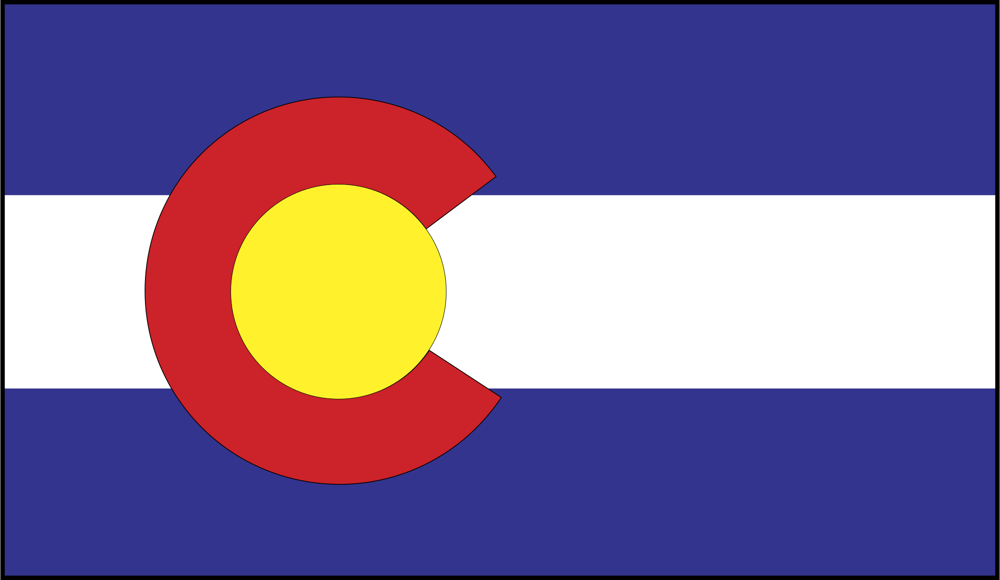

<mat-toolbar style="justify-content: space-between;z-index: 2;">
    <div style="display: flex;align-items: center;">
        <a routerLink="" routerLinkActive="active">
            
        </a>

        @if(screenWidth > 1000){
        <span style="font-family: Tekken;color: rgba(255, 255, 255, 0.87);font-size: 2.5rem;">Tekken
            <span style="color: rgb(255, 101, 127);">8</span> LeaderBoard</span>
        } @else {
        <span style="font-family: Tekken;color: rgba(255, 255, 255, 0.87);font-size: 1.5rem;">T<span
                style="color: rgb(255, 101, 127);">8</span> LeaderBoard</span>
        }
    </div>

    @if(screenWidth > 1000 && lastUpdate){
    <div>
        <span style="font-size: .75rem;">Updated: {{lastUpdate}}</span>
    </div>
    }
</mat-toolbar>